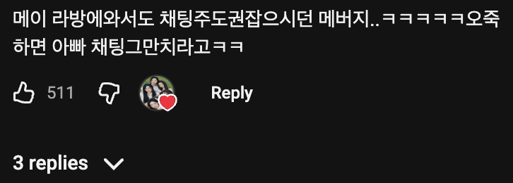
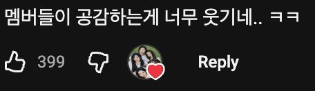
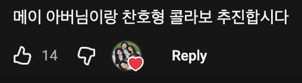
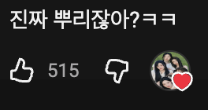

참고: 💃 리센느 원이: 전 쌩얼입니다 / 미나미: 아닙니다. 지금 할 거 다 하셨어요.




ㄹㅇ
제발 섭외 ㄱㄱ
메이 뿌찾 기다리고있습니다
앞에 할머니댄스 이모지콘 안붙이면 안됨?? 틀냄새남;
이 렉카 심볼임ㅋㅋ
아
개틀딱같긴함
아니 저기요 동의해주시는건좋은데 그런닉으로 말씀하시면 당황스러워요
말머리 처럼
개드립에서 리센느 마크로씀
리센느 좋아하지만 이건좀
메이 찬호박형이랑 방송 잡아줘.
미나미는 입 벌리고 웃을 때가 예쁨
메이 목소리가 뭔가 힐링됨
이새끼는 이모지콘 붙이고 반응안하는 렉카어그로꾼이내
넌 보일때마다 붐업이다
메이 진짜 사랑스럽고 귀여움.
메이 단독편 언제내주냐